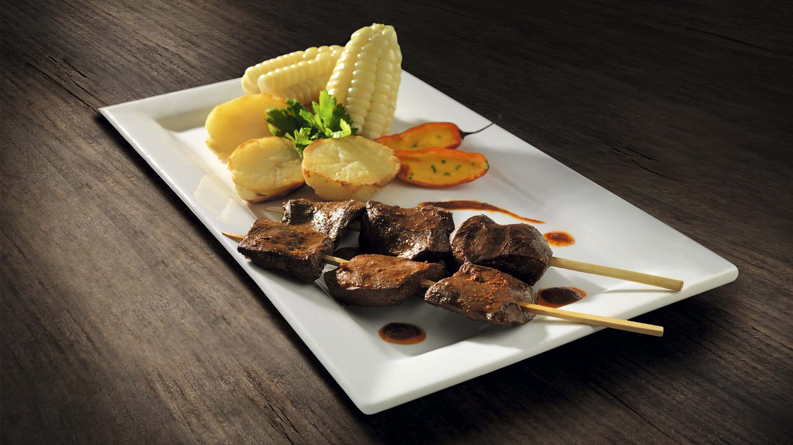

Anticuchos

Descripción:
Es un plato peruano tradicional de la comida criolla, que consiste en pedazos cortados de corazón de vaca, que son atravesados por palitos de caña parecidos a las brochetas, y cocinados a la parrilla previamente aderezados.
El origen del anticucho se remonta a la época del imperio incaico, cuando era preparado con carne de auquénidos como la llama o la alpaca. Luego cuando llegaron los conquistadores españoles, introdujeron la carne de res en reemplazo de la de llama, así como otros ingredientes que trajeron de Europa como el ajo.
Ingredientes:
- 1 corazón de res
- 3 cucharadas de ají mirasol molido
- 2 cucharadas de ají panca molido
- 1 cucharada se salsa de soya
- ½ cucharadita de comino en polvo
- 1 cucharada de ajo molido
- 1 cucharadita de orégano
- 1 cucharadita de sazonador ajinomoto (glutamato monosódico)
- ½ cucharadita de pimienta
- 1 taza de vinagre tinto
- 1 taza de cerveza rubia
- 2 cucharaditas de sal
Pasos para la prepación:
- Marinado
- En un bol colocamos los ajos, el aceite, pimienta, la sal , el comino, el orégano, el vinagre y el ají molido. Mezclamos todo con la ayuda de un batidor de mano.
- Agregamos el corazón de res a la mezcla. Marinamos por 2 horas.
- Cocción
- Ensartamos los trozos de corazón de res marinados en los palitos.
- Encendemos la parrilla y dejamos que esté en brasas.
- Ponemos los pinchos a la parrilla. Y vamos untando los anticuchos con el marinado, con la ayuda de unas hojas de maíz. La cocción depende del nivel de las brasas, deben estar no menos de 5 minutos de lado y lado .
- Ponemos las papas a la parrilla hasta que se doren.
- Presentación
- Servimos en un plato llano, los anticuchos junto a las papas.